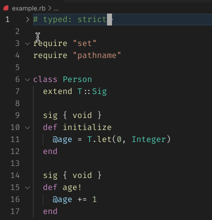

Class: RubyLsp::Requests::FoldingRanges
- Inherits:
-
BaseRequest
- Object
- SyntaxTree::Visitor
- BaseRequest
- RubyLsp::Requests::FoldingRanges
- Extended by:
- T::Sig
- Defined in:
- lib/ruby_lsp/requests/folding_ranges.rb
Overview

The folding ranges request informs the editor of the ranges where and how code can be folded.
Example
def say_hello # <-- folding range start
puts "Hello"
end # <-- folding range end
Defined Under Namespace
Classes: PartialRange
Constant Summary collapse
- SIMPLE_FOLDABLES =
T.let([ SyntaxTree::ArrayLiteral, SyntaxTree::BraceBlock, SyntaxTree::Case, SyntaxTree::ClassDeclaration, SyntaxTree::Command, SyntaxTree::DoBlock, SyntaxTree::FCall, SyntaxTree::For, SyntaxTree::HashLiteral, SyntaxTree::Heredoc, SyntaxTree::If, SyntaxTree::ModuleDeclaration, SyntaxTree::SClass, SyntaxTree::Unless, SyntaxTree::Until, SyntaxTree::While, SyntaxTree::Else, SyntaxTree::Ensure, SyntaxTree::Begin, ].freeze, T::Array[T.class_of(SyntaxTree::Node)])
- NODES_WITH_STATEMENTS =
T.let([ SyntaxTree::Elsif, SyntaxTree::In, SyntaxTree::Rescue, SyntaxTree::When, ].freeze, T::Array[T.class_of(SyntaxTree::Node)])
- StatementNode =
T.type_alias do T.any( SyntaxTree::Elsif, SyntaxTree::In, SyntaxTree::Rescue, SyntaxTree::When, ) end
Instance Method Summary collapse
-
#initialize(document) ⇒ FoldingRanges
constructor
A new instance of FoldingRanges.
- #run ⇒ Object
Methods inherited from BaseRequest
Constructor Details
#initialize(document) ⇒ FoldingRanges
Returns a new instance of FoldingRanges.
60 61 62 63 64 65 |
# File 'lib/ruby_lsp/requests/folding_ranges.rb', line 60 def initialize(document) super @ranges = T.let([], T::Array[LanguageServer::Protocol::Interface::FoldingRange]) @partial_range = T.let(nil, T.nilable(PartialRange)) end |
Instance Method Details
#run ⇒ Object
68 69 70 71 72 |
# File 'lib/ruby_lsp/requests/folding_ranges.rb', line 68 def run visit(@document.tree) emit_partial_range @ranges end |